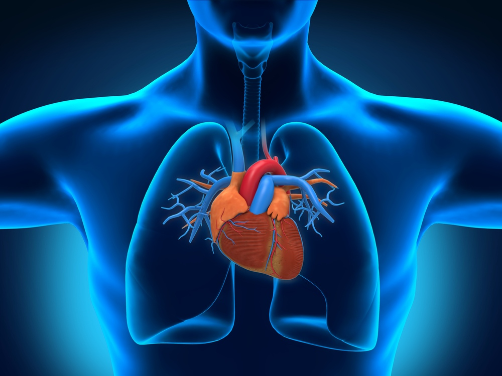
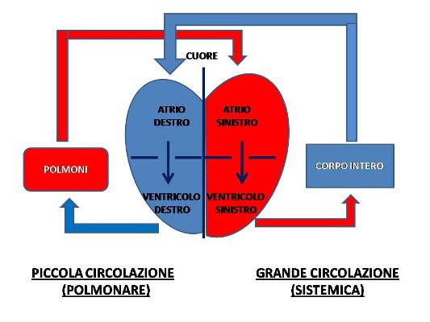

Studio dell'Apparato Cardiocircolatorio
Durante quest'anno, il percorso svolto si è articolato su due macro-argomenti teorici: la tecnologia al servizio dello sport e lo studio dell'apparato cardiocircolatorio. È stato proprio quest'ultimo ad affascinarmi maggiormente, agendo da stimolo per far nascere in me un profondo e inaspettato interesse verso l'anatomia e la fisiologia umana.
1. Il Cuore: Struttura e Anatomia Cavitaria
Il cuore è un organo muscolare cavo situato nel mediastino (lo spazio tra i polmoni) e orientato a sinistra. È diviso verticalmente dal setto cardiaco in due metà indipendenti, formate ciascuna da due camere specifiche (quattro cavità in totale): due atri superiori (ricezione del sangue) e due ventricoli inferiori (pompaggio). La parte destra gestisce il sangue venoso (deossigenato), mentre la sinistra accoglie e distribuisce quello arterioso (ricco di ossigeno). Le valvole assicurano l'unidirezionalità del flusso.
2. I Tessuti Cardiaci
- Pericardio: Un sacco fibro-sieroso che riveste e protegge l'esterno dell'organo, riducendo gli attriti.
- Miocardio: Il tessuto muscolare vero e proprio, composto da muscolo striato involontario, responsabile delle contrazioni ritmiche.
- Endocardio: Una sottile membrana endoteliale che riveste internamente le cavità cardiache e le valvole.

3. La Doppia Circolazione
- Piccola Circolazione (polmonare): Il ventricolo destro pompa il sangue deossigenato verso i polmoni tramite l'arteria polmonare, dove avviene l'ematosi (scambio gassoso), per poi tornare all'atrio sinistro attraverso le vene polmonari.
- Grande Circolazione (sistemica): Il ventricolo sinistro immette il sangue ossigenato nell'arteria aorta per distribuirlo a tutto l'organismo. Il sangue venoso ritorna infine all'atrio destro mediante le vene cave.
